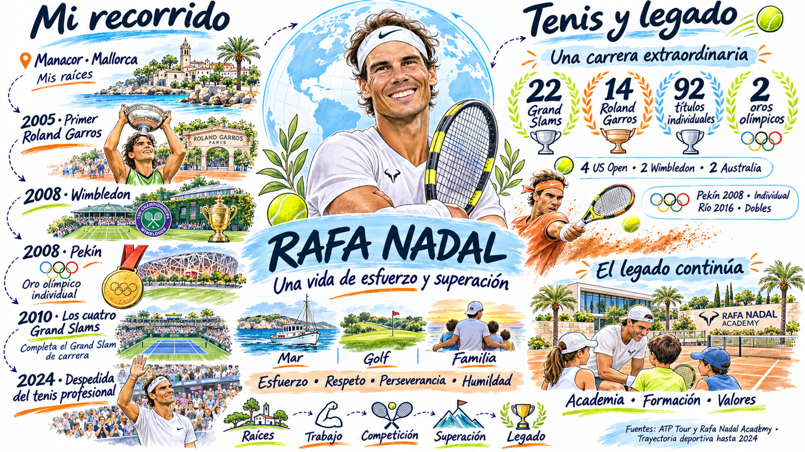

1.1 Práctica Excel

1.1.1 «Ofertas proveedores y pedidos»
PROMPT
Crea 20 materiales distintos, distribuidos entre ingredientes, envases, consumibles y repuestos, y 10 proveedores inventados. Genera 34 ofertas en total; algunos materiales deben tener ofertas de 2 o 3 proveedores.
Incluye estas columnas:
- Código de artículo
- Familia
- Descripción del artículo
- Proveedor ficticio
- Unidad de compra
- Precio unitario (€)
- Plazo de entrega (días)
- Pedido mínimo
Usa códigos únicos y datos coherentes entre sí. Todos los nombres, especificaciones, precios y condiciones deben ser inventados, sin consultar datos de mercado.
Genera exactamente 500 líneas de pedidos, con identificadores únicos PED-2026-0001 a PED-2026-0500 y fechas entre enero y octubre de 2026, ordenadas cronológicamente. Cada pedido tendrá una sola línea.
Utiliza exclusivamente las combinaciones de artículo y proveedor de la hoja de ofertas. Incluye todos los materiales, proveedores y ofertas al menos una vez. Las cantidades deben ser múltiplos positivos del pedido mínimo correspondiente.
Incluye exactamente estas columnas, en este orden:
- A. Pedido
- B. Fecha de pedido
- C. Código de artículo
- D. Familia
- E. Descripción del artículo
- F. Proveedor ficticio
- G. Unidad
- H. Cantidad
- I. Precio oferta (€)
- J. Precio pedido (€)
- K. Diferencia €/ud
- L. Diferencia %
- M. Importe oferta (€)
- N. Importe pedido (€)
- O. Impacto (€)
- P. Entrega prevista
Distribuye las discrepancias así:
- 450 líneas con precio de pedido igual al precio ofertado.
- 30 líneas con precio superior, entre un 2 % y un 10 %.
- 20 líneas con precio inferior, entre un 1 % y un 5 %.
Reparte las discrepancias entre distintas fechas, materiales y proveedores. Genera los datos una sola vez, sin funciones aleatorias volátiles.
Usa fórmulas vinculadas a las celdas de origen para:
- Recuperar el precio ofertado por combinación de artículo y proveedor.
- Diferencia €/ud = precio pedido − precio oferta.
- Diferencia % = diferencia €/ud ÷ precio oferta.
- Importe oferta = cantidad × precio oferta, redondeado a 2 decimales.
- Importe pedido = cantidad × precio pedido, redondeado a 2 decimales.
- Impacto = importe pedido − importe oferta.
- Entrega prevista = fecha de pedido + plazo de entrega ofertado, en días naturales.
No incluyas ninguna columna de «Revisión de precio», «Estado», «Conforme», «Sobrecoste», «Ahorro» ni otra clasificación equivalente.
Presentación:
- Convierte ambos conjuntos en tablas de Excel con filtros.
- Usa un diseño profesional, encabezados destacados y filas alternas.
- Muestra precios unitarios y diferencias unitarias con 4 decimales, importes con 2 decimales, porcentajes con 2 decimales y fechas en formato dd/mm/aaaa.
- Resalta mediante formato condicional los impactos positivos y negativos, sin añadir columnas.
- Ajusta los anchos para que encabezados y valores sean legibles.
- Indica claramente que todos los datos son simulados y que los precios e importes no incluyen IVA.
- Comprueba que hay exactamente 500 líneas, que se cumple el reparto de discrepancias y que las fórmulas no presentan errores.
1.1.2 «Comprobación de precios»
PROMPT
Haz más visual el control de precios:
- En «Comprobación de precio», muestra «✓ Coincide» con fondo verde, «⚠ Discrepancia» con fondo rojo y «? Sin datos» con fondo amarillo.
- Añade dos columnas calculadas: diferencia en euros y diferencia porcentual entre el precio de compra y el del contrato.
- En la diferencia en euros, utiliza barras de datos: rojo cuando pagamos de más y verde cuando pagamos de menos.
- Crea encima de la tabla tres indicadores grandes: artículos revisados, número de discrepancias y porcentaje de precios que coinciden.
Utiliza fórmulas y formato condicional para que todo se actualice al modificar los precios. Mantén «Sin datos» cuando falte información y evita errores de división si el precio del contrato es cero.
Trabaja directamente en la hoja, sin macros.
1.1.3 «Generación de Gráficos»
PROMPT
Trabaja directamente en este libro de Excel. Utiliza exclusivamente los pedidos ficticios existentes: no inventes registros ni modifiques las hojas originales.
OBJETIVO
Crea o actualiza una única hoja «Panel de pedidos». Si ya existe, revísala y reutilízala; no generes duplicados.
1. COMPROBACIÓN PREVIA
Identifica las columnas reales de:
- Identificador de pedido.
- Fecha de pedido.
- Proveedor.
- Importe comprado: utiliza el importe del pedido, no el importe ofertado ni el precio unitario.
Lee todas las filas. Comprueba que las fechas son válidas y que existen varios meses. Si falta algún campo necesario, indícalo sin inventarlo.
2. RESUMEN VINCULADO
Mediante fórmulas o tablas dinámicas, calcula por proveedor:
- Número de pedidos distintos: cada identificador se cuenta una sola vez por proveedor.
- Importe total comprado: suma de los importes de sus líneas.
- Importe medio por pedido = importe total / pedidos distintos.
El indicador global de pedidos debe contar identificadores distintos en todo el conjunto, no sumar recuentos por proveedor si pudiera haber duplicidades.
No utilices valores copiados como resultados estáticos. Evita errores cuando no haya pedidos.
3. SELECTOR NATIVO DE MESES
Añade arriba una segmentación real de Excel, no un desplegable ni botones decorativos:
- Mes y año, ordenados cronológicamente.
- Botones grandes en una o dos filas.
- Estilo azul sobre fondo claro y selección contrastada.
- Selección múltiple y opción de borrar filtro.
Conecta el selector al resumen, al gráfico y a todos los indicadores. Puedes crear una base auxiliar vinculada, sin alterar el origen. Ocúltala solo después de comprobar el funcionamiento.
Si la segmentación no está disponible, explica la limitación; no simules que funciona.
4. INDICADORES SUPERIORES
Muestra con tamaño grande:
- Importe total comprado, en euros sin IVA.
- Número de pedidos distintos.
- Proveedor con mayor importe comprado y su importe.
Indica visiblemente el periodo seleccionado. Si no hay resultados, muestra «Sin pedidos en el periodo seleccionado».
5. GRÁFICO DE BURBUJAS
Título: «El mapa de nuestras compras».
- X: número de pedidos distintos.
- Y: importe medio por pedido (€).
- Área de cada burbuja: importe total comprado.
- Una burbuja por proveedor.
- Etiquetas con los nombres y un color constante por proveedor.
- Tamaño grande, importes legibles y explicación visible del tamaño.
Prioriza una sola serie con todos los proveedores como puntos y colores y etiquetas por punto, vinculada directamente a un bloque numérico contiguo: pedidos, importe medio e importe total.
No consideres válido el gráfico solo porque tenga nombres de series. Comprueba que Excel reconoce puntos numéricos y que sus vínculos X, Y y tamaño apuntan a las celdas correctas.
Ajusta los ejes al rango real de los datos, con margen para las burbujas. Si hay filtro mensual, los ejes deben seguir mostrando todos los puntos del periodo. No uses límites fijos que dejen datos fuera ni escalado a miles o millones sin indicarlo.
6. VALIDACIÓN ANTES DE TERMINAR
- Reconcilia los indicadores y el resumen con los pedidos originales.
- Verifica que cada proveedor con compras tenga una burbuja con X, Y y tamaño válidos.
- Comprueba etiquetas, formatos y ausencia de errores.
- Prueba un mes, dos meses y borrar el filtro.
- Comprueba el caso sin resultados, sin modificar datos originales.
- Confirma que el origen no ha cambiado.
- Deja seleccionados todos los meses.
No afirmes que las burbujas se ven únicamente porque el gráfico existe. Verifica sus puntos y vínculos; si no puedes comprobar su representación visual, dilo expresamente.
Finaliza con un resumen breve de lo construido, cifras verificadas y cualquier limitación real. No crees hojas auxiliares innecesarias ni dejes gráficos fallidos o duplicados.
1.1.4 «Generador de selección»
PROMPT
Utiliza los pedidos ficticios que ya existen en este libro para crear una hoja llamada «Panel de pedidos». No inventes nuevos registros ni modifiques los datos originales.
Crea un panel interactivo con estos elementos:
SELECTOR VISUAL DE PERIODO
Añade arriba una segmentación de datos con botones grandes para seleccionar meses, no un desplegable. Identifica cada mes con su año y ordénalos cronológicamente.
Distribuye los botones en una o dos filas, con estilo azul sobre fondo claro y un contraste marcado para la selección. Permite seleccionar varios periodos y borrar el filtro para mostrar todos los datos.
GRÁFICO DE BURBUJAS
Resume los datos por proveedor y representa:
- Eje horizontal: número de pedidos distintos.
- Eje vertical: importe medio por pedido en euros.
- Tamaño de la burbuja: importe total comprado.
- Etiquetas: nombre del proveedor.
Mantén un color consistente para cada proveedor. Haz el gráfico grande y legible, con el título «El mapa de nuestras compras» y una indicación visible del periodo seleccionado.
INDICADORES
Muestra encima del gráfico:
- Importe total comprado.
- Número de pedidos distintos.
- Proveedor con mayor importe de compras.
FUNCIONAMIENTO
Conecta el selector al gráfico y a todos los indicadores. Al pulsar un mes o varios, todo el panel debe mostrar únicamente los pedidos de ese periodo.
Crea las tablas dinámicas, columnas auxiliares y fórmulas necesarias. Para las burbujas, utiliza un gráfico normal vinculado a un resumen que responda al filtro si no admite conexión directa.
Si un pedido tiene varias líneas, cuenta su identificador una sola vez. Calcula el importe medio dividiendo el importe total entre el número de pedidos distintos. Cuando el filtro no devuelva pedidos, muestra un aviso y evita errores de cálculo.
Comprueba primero que existen fechas válidas y varios periodos. No inventes fechas si faltan.
Utiliza controles nativos de Excel, sin macros ni botones decorativos. Si alguna función no está disponible en este entorno, explica la limitación.
Trabaja directamente en el libro, no te limites a dar instrucciones.
1.2 Práctica PowerPoint
Selecciona una práctica en el menú de la izquierda.
1.2.1 «Generar una presentación»
Crea desde cero una presentación de exactamente tres diapositivas que explique quién es Chic-kles Gum (CK), qué hace y qué la hace interesante.
Consulta https://chic-kles.com/ y otras fuentes públicas fiables. Tú decides los títulos, la estructura y cómo contar la historia.
Quiero una presentación muy visual, con gráficos, cifras relevantes e ilustraciones atractivas. La primera diapositiva debe tener mucho gancho y mostrar de un vistazo la actividad de CK. Evita una portada convencional.
Combina fotografías reales de productos, el logotipo, ilustraciones de procesos y gráficos cuando haya datos suficientes. Destaca las cifras más interesantes con números grandes y poco texto.
Utiliza formato panorámico 16:9, una estética moderna y colores coherentes con nuestra web. Cada diapositiva debe tener una composición propia y un mensaje claro.
Inventa la propuesta creativa, no los datos. Verifica las cifras, indica su fecha y cita las fuentes en las notas. No presentes imágenes ilustrativas como fotografías de nuestras instalaciones.
Crea directamente las tres diapositivas y añade notas para explicarlas en unos tres minutos.
1. Crear con Copilot
- Explicar el entorno visual de Copilot.
- Explicar cómo es un prompt.
2.1 Analizar con Copilot
Selecciona una práctica en el menú de la izquierda.
2.1.1 «Analizar con Copilot»
ROL
Actúa como consultor especializado en normativa europea de envases y su aplicación a la industria alimentaria, con perspectiva de operaciones industriales.
INSTRUCCIÓN
Analiza cómo afectará el nuevo Reglamento europeo de envases y residuos de envases a Chic-kles Gum. Identifica qué debemos cambiar, cuándo y qué decisiones debería tomar nuestro comité de dirección.
CONTEXTO
Soy Enrique García García, Director de Operaciones de Chic-kles Gum, fabricante de chicle sin azúcar ubicado en Riba-roja de Túria, Valencia, que suministra a la gran distribución.
Consulta https://chic-kles.com/ para conocer nuestra actividad. Trabajamos con botes, bolsitas, cajas de cartón y envolturas de barras, además de etiquetas, sleeves y embalajes de agrupación y transporte.
Necesitamos anticipar las consecuencias para los materiales, el diseño de envases, los proveedores y las líneas de envasado, para orientar nuestras inversiones y evitar adaptaciones tardías.
EJEMPLOS
Para cada obligación, sigue esta estructura:
«Requisito y fuente oficial → formato potencialmente afectado → implicación para CK → dato pendiente de confirmar → acción y plazo».
Por ejemplo, si identificas un requisito de reciclabilidad aplicable a un bote con sleeve, explica qué información debemos solicitar al proveedor para evaluar el conjunto. No des por hecho que nuestro envase incumple.
RESTRICCIONES
- Utiliza fuentes oficiales vigentes y enlaza los artículos que respaldan cada obligación.
- Distingue fechas de entrada en vigor, aplicación y periodos transitorios.
- Comprueba excepciones y condiciones específicas de los envases alimentarios.
- Diferencia las responsabilidades de CK, proveedores y clientes según su papel en cada operación.
- No inventes materiales, pesos, composiciones, costes ni características de nuestros envases.
- Separa obligaciones confirmadas, interpretaciones, estimaciones y cuestiones pendientes.
- Si faltan datos, indica cuáles y continúa con un análisis condicionado.
- Presenta rangos de costes solo cuando exista una base documentada.
- Compara con empresas del sector únicamente mediante prácticas verificables.
OUTPUT
Entrega en español:
- Un resumen ejecutivo de una página para Dirección.
- Una tabla por formato con obligación, fuente, fecha, impacto, datos pendientes y acción recomendada.
- Riesgos, costes potenciales y oportunidades, ordenados por prioridad.
- Un plan para los próximos doce meses con acciones, áreas responsables propuestas e hitos.
- Las preguntas que CK debe resolver para concretar el diagnóstico.
REVISIÓN FINAL — EIO
Antes de entregar, evalúa si las conclusiones están respaldadas, si has atribuido correctamente las responsabilidades y si las acciones son concretas. Corrige los puntos débiles y señala las incertidumbres que permanezcan.
Más consejos de prompt y cómo preguntar
LOS 5 ASESORES
Actúa como un panel de cinco asesores para ayudarme a analizar una decisión.
Mi caso o decisión: [Escribe aquí el asunto que quieres analizar].
Antes de empezar, hazme tres preguntas, una a una, para entender el contexto, mi objetivo y las restricciones. Espera mi respuesta antes de formular la siguiente.
Después, analiza el caso desde cinco perspectivas. Dedica un máximo de cinco líneas a cada una:
- El contrario: cuestiona mi planteamiento. ¿Qué puede salir mal y qué puntos débiles estoy pasando por alto?
- El de primeros principios: identifica el problema de fondo, cuestiona los supuestos y reconstruye la solución desde lo esencial.
- El expansionista: propone oportunidades, alternativas y posibilidades que todavía no he considerado.
- El externo: analiza cómo lo vería alguien ajeno a nuestra empresa y qué daríamos por sentado por costumbre.
- El ejecutor: convierte el análisis en acciones concretas, con responsables propuestos y plazos.
Termina con una síntesis breve:
- Recomendación: qué harías y por qué.
- Mayor riesgo: qué debemos vigilar.
- Primer paso esta semana: una acción concreta para avanzar.
- Incertidumbres: qué información falta y qué podría cambiar la recomendación.
Distingue los hechos de los supuestos. No inventes datos ni fuerces el consenso entre los cinco asesores.
2.2 Crear con Copilot
Selecciona una práctica en el menú de la izquierda.
2.2.1 «Practica de Rafa Nadal»

Crea una infografía sobre mí con el estilo de la imagen adjunta: ilustraciones, títulos manuscritos, fondo blanco y formato horizontal.
Hazme estas preguntas una a una, esperando mi respuesta antes de continuar:
- ¿Cómo te llamas y a qué te dedicas?
- ¿De dónde eres y dónde has vivido?
- ¿Qué tres momentos destacarías de tu trayectoria? Puedes mencionar empresas, estudios o proyectos.
- ¿Cuáles son tus aficiones y valores?
- ¿Qué objetivo tienes en CK?
Acepta respuestas cortas. Utiliza mi foto de perfil de Microsoft 365 como referencia para el retrato. Si no puedes acceder a ella, pídeme una foto o utiliza una ilustración genérica.
Busca en internet las empresas, centros de estudios y lugares que mencione, preferentemente en sus webs oficiales, para incorporar logotipos, edificios y detalles visuales que enriquezcan la infografía. No deduzcas datos sobre mi trayectoria a partir de esas búsquedas.
Después genera directamente la infografía con mis respuestas. No inventes datos ni copies la biografía de la imagen. Empieza por la primera pregunta.
3. Integración con nuestras aplicaciones de Microsoft
Selecciona una práctica en el menú de la izquierda.
3.1.1 Integración con el correo
Busca en los correos de Nuria Miñana, un artículo de Peter que hable sobre la motivación de los empleados.
Haz la búsqueda en dos fases y no pases directamente a una búsqueda temática:
- Inventario: identifica primero todos los artículos de Peter Schreibvogel que Nuria Miñana me haya enviado, independientemente de su título o tema. Haz una lista completa con título del artículo, fecha y asunto del correo.
- Revisión: revisa después, uno por uno, el contenido de todos los artículos del inventario y comprueba si en cualquier parte del texto se habla de:
- sentido o significado del trabajo;
- propósito profesional o personal;
- encontrar propósito en la vida;
- que el trabajo aporte sentido;
- motivación relacionada con propósito o sentido;
- u otras formulaciones equivalentes.
No descartes un artículo porque su título o tema principal trate de otra cuestión, como estrés, liderazgo, motivación, energía, coaching, etc.
Para cada artículo en el que aparezca el concepto, indícame:
- título;
- asunto y fecha del correo;
- apartado o contexto concreto donde aparece;
- cita breve o idea exacta;
- conclusión que extrae Peter Schreibvogel.
Al final, indica cuántos artículos has inventariado en total, cuántos has revisado y cuántos tratan el concepto. Si no has podido revisar alguno, identifícalo expresamente. No afirmes que has revisado “todos” si no has podido comprobar individualmente todo el inventario.
3.1.2 Integración simultánea correo y OneNote
[Chat] Busca en mis correos, mi OneNote y mis conversaciones de Teams cuando se va a hacer el "Laboratorio de Pilas"
3.2.1 Generar una automatización
Simulación de la "Factura de Prinova" (lo hace Diego)
- Se muestra el Excel.
- Se manda la factura de Prinova para que la procese.
4. Programación autónoma
Selecciona una práctica en el menú de la izquierda.
4.1.1 Programación de una web simple
Diseña y programa una web interactiva sobre CHIC-KLES, inspirada visualmente en la web pública de CHIC-KLES sin azúcar, pero sin copiar literalmente su diseño.
El objetivo es crear una práctica para demostrar las capacidades de Copilot para investigar, diseñar y programar una experiencia web interactiva.
1. Investiga antes de programar
Investiga CHIC-KLES GUM utilizando información pública disponible en Internet.
No te limites a la web oficial. Puedes utilizar otras fuentes públicas fiables para enriquecer el contenido: noticias, entrevistas, publicaciones, redes sociales corporativas, distribuidores, ferias, proyectos públicos, información empresarial u otras fuentes relevantes.
Contrasta la información y no inventes datos. Prioriza las fuentes oficiales y muestra al final las principales fuentes utilizadas.
2. Diseño y experiencia
Crea una experiencia moderna, visual, fresca y dinámica inspirada en el universo del chicle, los sabores y los colores de CHIC-KLES.
La página inicial debe mostrar grandes bloques interactivos como:
- Descubre CHIC-KLES
- Nuestros sabores
- Explorador de sabores
- ¿Qué CHIC-KLES eres?
- Sin azúcar
- ¿Qué aporta mascar chicle?
- Calidad
- ¿Sabías que...?
No muestres toda la información desde el principio. Quiero descubrirla interactuando con la web.
Al pulsar los diferentes títulos, la información deberá aparecer mediante tarjetas, animaciones, expansiones, transiciones, cambios de color u otros recursos interactivos.
3. Explorador de sabores
Crea un Explorador de sabores como uno de los elementos protagonistas.
Diseña un control visual que permita moverse entre distintas sensaciones, por ejemplo: Fresco → Intenso → Dulce → Frutal
Al mover el selector deben cambiar dinámicamente:
- Los sabores CHIC-KLES recomendados.
- El color y aspecto de la interfaz.
- Las descripciones.
- Elementos gráficos o animaciones.
Cada sabor debe tener su propia personalidad visual.
El objetivo es que el usuario pueda explorar la gama de una manera divertida, no mediante un simple listado de productos.
4. ¿Qué CHIC-KLES eres?
Crea un pequeño test interactivo denominado “¿Qué CHIC-KLES eres?”.
Haz entre 3 y 5 preguntas, presentadas una a una. Por ejemplo:
- ¿Buscas frescor o sabor?
- ¿Prefieres algo intenso o suave?
- ¿Eres más clásico o atrevido?
- ¿Menta o fruta?
Las respuestas deben influir realmente en el resultado mediante lógica JavaScript.
Al terminar, muestra una recomendación del tipo: “Tu CHIC-KLES es…” seguida del sabor recomendado, su descripción y una pequeña animación o transformación visual de la pantalla.
Permite posteriormente volver a realizar el test.
5. Interactividad
Quiero utilizar esta práctica para comprobar hasta dónde puede llegar Copilot programando.
Incluye:
- HTML, CSS y JavaScript funcional.
- Diseño responsive.
- Animaciones.
- Microinteracciones.
- Hover y efectos al pulsar.
- Contenido desplegable.
- Cambios dinámicos de color.
- Estados de la aplicación.
- Transiciones suaves.
- Elementos que reaccionen a las decisiones del usuario.
No quiero simplemente una página informativa con enlaces.
Quiero que se comporte como una pequeña aplicación web interactiva.
6. Sorpréndeme
Además del Explorador de sabores y ¿Qué CHIC-KLES eres?, inventa y programa al menos una interacción adicional que resulte sorprendente y visualmente atractiva.
Tienes libertad creativa para decidirla.
Prioriza una interacción que permita demostrar alguna capacidad de programación diferente a las anteriores.
7. Fuentes
Añade al final una sección discreta denominada Fuentes, indicando las principales fuentes públicas utilizadas.
Distingue claramente qué información procede de CHIC-KLES y qué información procede de otras fuentes.
Esta web es una práctica/prototipo y no una web oficial de CHIC-KLES.
8. Ejecución
No te limites a explicarme cómo podría hacerse.
Primero resume brevemente:
- Qué información has encontrado.
- Qué concepto visual propones.
- Qué interacciones vas a construir.
Y después programa directamente el prototipo funcional e interactivo para que pueda probarlo.
He reforzado precisamente esos dos puntos porque hacen la prueba mucho más interesante: el Explorador demuestra programación basada en estados y cambios dinámicos, mientras que ¿Qué CHIC-KLES eres? obliga a manejar preguntas, decisiones, lógica y resultados personalizados. Así no acaba siendo simplemente una landing page bonita.
1. Automatización / Skills y agentes
Sin contenido por el momento.